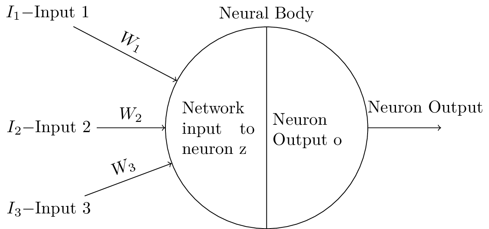

\documentclass[tikz]{standalone}
\usepackage{tikz}
\usetikzlibrary{shapes,snakes}
\usetikzlibrary{calc, shapes.geometric,shapes.symbols,fit,positioning,shadows}
\begin{document}
\begin{tikzpicture}
\node [circle split,draw,rotate=90, align=center,label={[anchor=north, inner sep=0pt, yshift=1.2em] east:{\selectfont Neural Body}}] (part){\rotatebox{-90}{ \parbox{1.5cm}{Network input to neuron z} } \nodepart{lower} \rotatebox{-90}{\parbox{1.5cm}{Neuron Output o}} };
\draw[->,rounded corners=5pt] (part.south) -- ($(part.south)+(1.5,0)$);
\node[right = 3 em of part.south, label=Neuron Output] () {};
\node[above left = 0em and 10em of part.east] (t1) {$I_1-$Input 1};
\node[left = 4em of part.north] (t2) {$I_2-$Input 2};
\node[below left = 4em and 4em of part.north] (t3) {$I_3-$Input 3};
\draw[->] (t1) -- (part) node[midway,sloped,above] {$W_1$};
\draw[->] (t2) -- (part) node[midway,sloped,above] {$W_2$};
\draw[->] (t3) -- (part) node[midway,sloped,above] {$W_3$};
\end{tikzpicture}
\end{document}Created by David Li